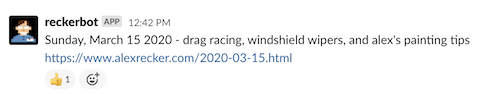

jekyll-recker
The Greatest Jekyll Plugin in the World. For a live example, check out my personal website.
Installation
Add jekyll-recker to the jekyll_plugins group in your Gemfile.
group :jekyll_plugins do
gem 'jekyll-recker'
end
Then add the plugin to jekyll site’s config.yml file.
pugins:
- jekyll-recker
If you’d like to make your site look like mine too, set the theme in
config.yml too.
theme: jekyll-recker
Usage
Share
Use the share jekyll command to post a link to your latest published
blog post to any or all of the configured Shares.
# TODO: example of `be jekyll share`
Perform a test run with the --dry flag.
# TODO: example of `be jekyll share --dry`
Send to all configured shares, or just pick one of them.
$ jekyll share slack
$ jekyll share twitter
Slack
Send the latest published post to a slack channel.

Configure the slack share in _config.yml.
recker:
slack:
myteam:
channel: '#blogs'
username: 'blogbot'
emoji: ':robot:'
webhook_cmd: cat ~/.secrets/slack-webhook.txt
Use the webhook_cmd option to shell out to gpg or another CLI
password manager. Alternatively, you can supply the private incoming
webhook using an environment variable.
export SLACK_MYTEAM_WEBHOOK="https://.../" # SLACK_ + MyTeam.upcase + _WEBHOOK
Multiple teams are supported as well.
recker:
slack:
MyTeamA:
channel: '#blogs'
username: 'blogbot'
emoji: ':robot:'
MyTeamB:
channel: '#blogs'
username: 'blogbot'
emoji: ':robot:'
MyTeamC:
channel: '#blogs'
username: 'blogbot'
emoji: ':robot:'
Send a tweet with a link to the latest published post.
Configure the tweet share in _config.yml.
recker:
twitter:
access_token_secret_cmd: pass twitter/reckerbot/access-token-secret
access_token_cmd: pass twitter/reckerbot/access-token
consumer_api_key_cmd: pass twitter/reckerbot/consumer-api-key
consumer_api_secret_cmd: pass twitter/reckerbot/consumer-api-secret-key
Alternatively, ensure these environment variables are set.
export TWITTER_ACCESS_TOKEN_SECRET="..."
export TWITTER_ACCESS_TOKEN="..."
export TWITTER_CONSUMER_API_KEY="..."
export TWITTER_CONSUMER_API_SECRET="..."